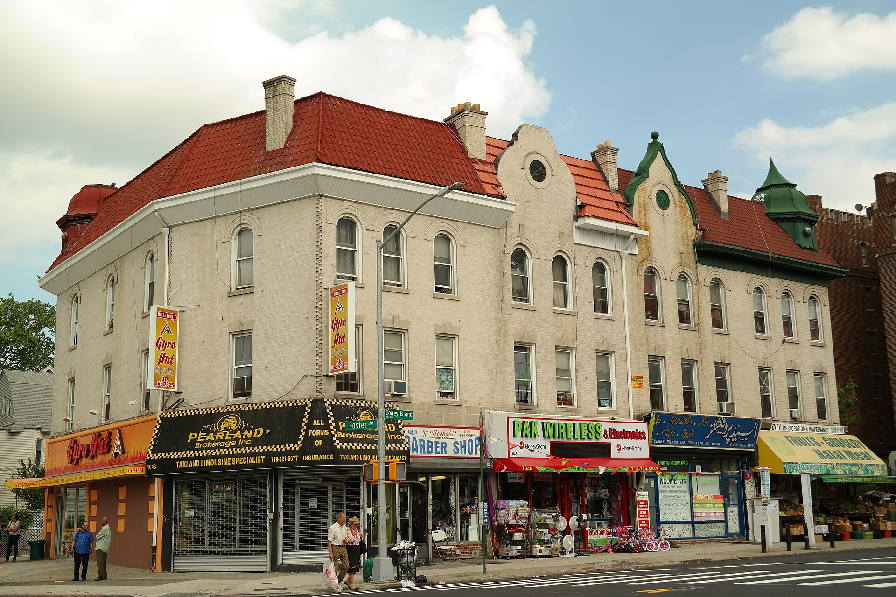

O‘zbek diasporasi AQShda: jamoaning shakllanishi tarixi
1958-yilgi ilk uyushmadan bugungi “Kichik O‘zbekiston”gacha — AQShdagi o‘zbek va Markaziy Osiyo jamoasining shakllanishi: Turkiston muhojirlari, buxoro yahudiylari, DV lotereyasi to‘lqini va Bruklindagi manzil. Faktlarga asoslangan, sanalar bilan.

AQShdagi o‘zbek diasporasi bir necha to‘lqinda, turli davrlarda shakllangan. Bugungi kunda O‘zbekiston DV (grin-karta) lotereyasida g‘olib chiqqanlar soni bo‘yicha dunyoda birinchi o‘rinda turadi va Nyu-Yorkda “Kichik O‘zbekiston” deb atalgan mahalla mavjud. Quyida bu jamoaning shakllanish tarixi rasmiy va nufuzli manbalar asosida, sanalar bilan bayon etiladi.
Ilk uyushma: 1958-yil, Filadelfiya
Markaziy Osiyodan kelgan muhojirlarni ifodalagan ilk tashkilotlardan biri — Turkiston-Amerika uyushmasi (Turkistanian American Association) 1958-yil 13-dekabrda Filadelfiyada tashkil etilgan. U 1961-yilda Nyu-Yorkda qayta ro‘yxatdan o‘tgan, 1980-yilda Bruklinga, 2007-yilda esa Nyu-Jersining Dover shahriga ko‘chgan. Uyushma AQShdagi Markaziy Osiyo muhojirlarini ifodalagan ilk nodavlat tashkilot sifatida tavsiflanadi.
1980-yillar: Afg‘on urushi davri qochqinlari
1980-yillarda Sovet Ittifoqining Afg‘onistonga bostirib kirishi bilan bog‘liq siyosiy qochqinlar to‘lqini keldi; ular orasida musulmon o‘zbeklar ham bo‘lib, ko‘pchiligi Nyu-Jersi shtatining Morris okrugiga o‘rnashdi.
Buxoro yahudiylari — eng yirik alohida jamoa
Markaziy Osiyodan AQShga kelgan eng yirik alohida jamoa — buxoro yahudiylari. Ularning muhojirligi 1960–70-yillarda kuchaygan, 1985-yildan keyin (chegara ochilishi bilan) yana oshgan va eng katta to‘lqin 1991-yildagi Sovet Ittifoqi parchalanganidan keyingi 1990-yillarga to‘g‘ri kelgan. 1990-yilda Andijon va Farg‘ona vodiysidagi yahudiylarga qarshi tartibsizliklar ko‘pchilikni Isroil yoki AQShga hijrat qilishga undagan.
Turli baholarga ko‘ra, AQShda taxminan 70 000 buxoro yahudiysi yashaydi; eng katta jamoa Nyu-Yorkning Kvins tumanida — Rego-Park, Forest-Hills va Kyu-Gardens hududlarida to‘plangan. “Ozodlik” (RFE/RL) 2001-yilda Kvinsdagi jamoani ~40 000 kishi deb baholagan (Isroildan keyin dunyodagi ikkinchi yirik jamoa) va 1990-yillarda 10 000 dan ortiq kishi Nyu-Yorkka kelganini qayd etgan.
1991-yildan keyin: mustaqillik va DV lotereyasi
1991-yilda O‘zbekiston mustaqillikka erishgach, AQSh o‘zbek muhojirligining asosiy manziliga aylandi. 1990-yilgi Immigratsiya qonuni bilan tashkil etilgan DV (diversifikatsiya) lotereyasi asosiy kanallardan biri bo‘ldi. Davlat departamenti ma’lumotiga ko‘ra, 1996–2016-yillarda O‘zbekistondan DV orqali 56 028 oila g‘olib chiqqan. (1991–1999-yillarda O‘zbekiston statistikada boshqa sobiq Sovet respublikalari bilan birga hisoblangani sabab, o‘sha davr uchun aniq yillik raqamlar cheklangan.)
O‘sish sur’ati tez bo‘lgan: AQShga kelgan o‘zbeklar soni 2007-yildagi 1 304 kishidan 2012-yilda 3 716 kishiga — deyarli uch baravar oshgan; 2012–2013-yillar tarixdagi eng yuqori nuqta hisoblanadi. So‘nggi yillarda O‘zbekiston DV bo‘yicha dunyoda yetakchi: DV-2025 bo‘yicha ~5 564 kishi tanlab olindi (2025-yil 3-mayda e’lon qilingan, dunyoda birinchi o‘rin). Hozirda har yili taxminan 6 000–7 800 o‘zbek AQShga ko‘chib o‘tadi.
“Kichik O‘zbekiston”, Bruklin
Musulmon o‘zbeklarning asosiy markazi — Bruklindagi “Kichik O‘zbekiston” (Little Uzbekistan), Kensington, Midvud va Ditmas-Park mahallalari kesishuvidagi Koni-Aylend avenyusi atrofida joylashgan. 2000-yillardan buyon taxminan 20 000 DV lotereyasi orqali kelgan o‘zbek musulmoni Bruklinga o‘rnashgan. 2013-yilgi aholini ro‘yxatga olish ma’lumotlariga ko‘ra, Nyu-Yorkda ~23 000 o‘zbek muhojiri bo‘lgan — o‘n yil oldingidan qariyb ikki baravar ko‘p. Avenyu bo‘ylab o‘zbek oshxonalari, do‘konlari va masjidlar ochilgan.
Aholi soni: ta’rif muhim
AQShdagi o‘zbeklar sonini bitta raqam bilan ifodalab bo‘lmaydi — u qanday sanalishiga bog‘liq. Aholini ro‘yxatga olish (ACS) 2023-yil ma’lumotiga ko‘ra, faqat “o‘zbek” deb belgilaganlar ~25 000 kishi, boshqa millat bilan birga belgilaganlar bilan esa ~55 000 kishi; O‘zbekistonda tug‘ilganlar soni esa ~74 967 kishi (2023). Oxirgi raqam kattaroq, chunki unga buxoro yahudiylari va etnik ruslar ham kiradi. Pew tadqiqot markazi ta’kidlashicha, 2023-yil — o‘zbeklar statistikada birinchi marta alohida ajratilgan yil.
Umumiy manzara
Xulosa qilib aytganda, AQShdagi o‘zbek diasporasi 1991-yilgacha juda kichik bo‘lgan → 1990-yillarda asosan Kvinsga kelgan buxoro yahudiylari bilan minglab kishiga yetgan → 2007–2012-yillarda DV lotereyasi tufayli keskin o‘sgan → 2025-yilga kelib O‘zbekiston DV bo‘yicha dunyoda birinchi o‘ringa chiqqan. Bu yo‘nalish — manbalar bilan tasdiqlangan asosiy o‘zan. Aniq raqamlar ta’rifga qarab farq qiladi.
Manbalar
- Turkistanian American Association — founding (13 Dec 1958, Philadelphia) and moves
- RFE/RL — "U.S.: Bukharian Jews Seek To Preserve Identity" (18 April 2001)
- Pew Research Center — Uzbeks in the U.S. (2023 ACS analysis)
- U.S. Department of State, Bureau of Consular Affairs — DV winners from Uzbekistan (1996–2016: 56,028 families)
- Untapped New York — "Little Uzbekistan" Brooklyn and Uzbek migration growth 2007–2012
- Times of Central Asia — Uzbekistan #1 in DV-2025 selections